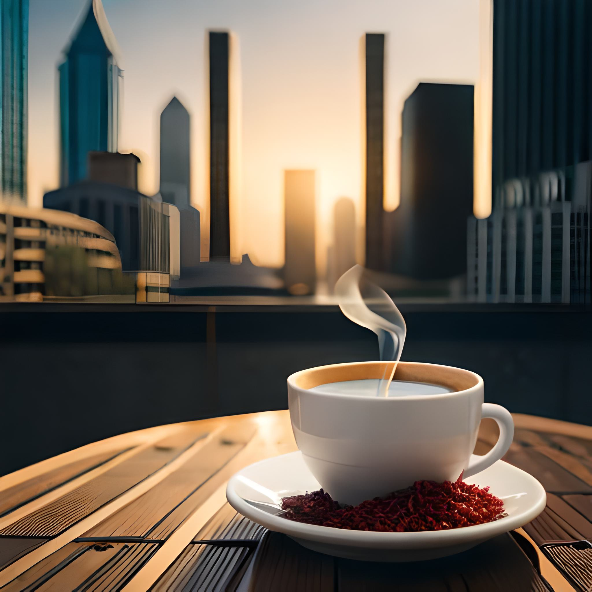

Somos a cafeteria Marilu Coffee, conhecidos por um café único com uma pitada de pimenta. A proprietária Marilu, criou essa combinação audaciosa para elevar a experiência dessa iguaria. Apesar das dúvidas iniciais, aqueles que experimentaram o nosso carro-chefe se surpreenderam com os sabores intensos e cativantes.
Nossa reputação se espalhou, atraindo amantes do café de todo o país, se tornando um local de encontro popular. Atualmente é um símbolo de coragem e inspiração, encorajando as pessoas a experimentar algo novo e desfrutar da paixão da vida.
